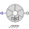

SMPM_NoLoadSMPM at no-load |
|
Diagram
{kind=link}
Information
This information is part of the Modelica Standard Library maintained by the Modelica Association.
Synchronous machine with permanent magnets at no-load, driven with constant nominal speed.
You may check the terminal voltage = VsOpenCircuit (shown by the length of the space phasor) and the frequency = fsNominal.
Additionally, you may check the phase shift of the stator voltages with respect to the mechanical shaft angle:
- If the shaft angle starts at (pi + 0*pi/3)/p, the flux linkage through phase 1 is at the maximum and therefore this phase voltage starts at 0.
- If the shaft angle starts at (pi + 2*pi/3)/p, the flux linkage through phase 2 is at the maximum and therefore this phase voltage starts at 0.
- If the shaft angle starts at (pi + 4*pi/3)/p, the flux linkage through phase 3 is at the maximum and therefore this phase voltage starts at 0.
Note that the angle of the voltage space phasor is pi/2 behind the angle of the hall sensor, i.e. after a rotation of the shaft by pi/2/p the flux linkage of phase 1 is zero and the induced voltage a maximum.
Parameters (1)
| smpmData |
Value: Type: SM_PermanentMagnetData Description: Synchronous machine data |
|---|
Components (10)
| smpmData |
Type: SM_PermanentMagnetData Description: Synchronous machine data |
|
|---|---|---|
| smpm |
Type: SM_PermanentMagnet |
|
| terminalBox |
Type: TerminalBox |
|
| ground |
Type: Ground |
|
| potentialSensor |
Type: PotentialSensor |
|
| toSpacePhasor |
Type: ToSpacePhasor |
|
| toPolar |
Type: ToPolar |
|
| toDeg |
Type: Gain |
|
|  | hallSensor |
Type: HallSensor |
| constantSpeed |
Type: ConstantSpeed |